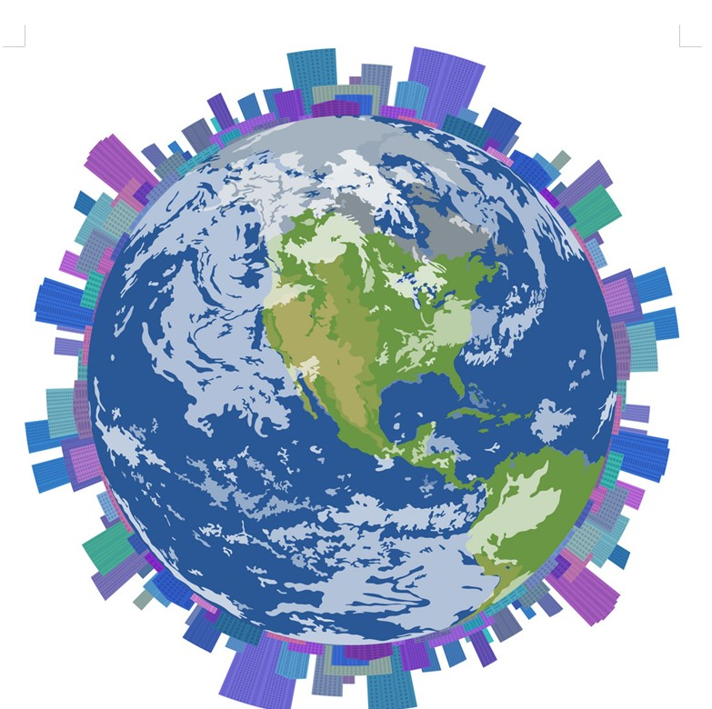
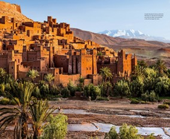

건조기후
건조기후
기상정보
건조기후 맞춤형
도시 인프라(1)
건조기후 맞춤형
도시 인프라(2)

강수량보다 증발량이 많은 기후
<특징>
의: 강한 햇빛과 모래바람을 막고 체온을 보호하기 위해
온몸을 가리는 헐렁한 옷
식: 가축의 젖(낙타젖), 고기(닭고기, 양고기, 낙타고기),
오아시스 주변의 밀, 보리, 대추야자
주: 강수량↓→완만, 평평한 지붕
일교차↑→벽을 두껍게, 창을 작게
지역: 남위 20도~30도
북위 20도~30도 부근
사하라 사막, 아라비아 사막, 모하비 사막